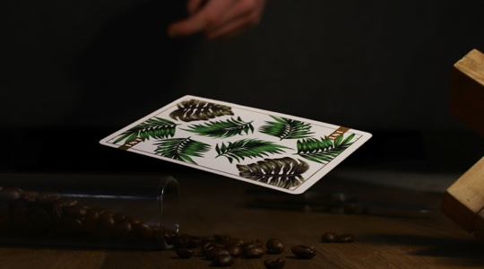

<div class="blog-item-container md-3">
  <div class="blog-item">
    <a href="#" class="blog__image">
      
    </a>
    <div class="blog__badge">Poker Tips & Startegy</div>
    <div class="blog-main">
      <a href="#" class="blog__title">
        <h2>
          Poker Tips By George: Bluffing on the Turn
        </h2>
      </a>
      <div class="blog__author">
        <a href="#" class="blog__author_name">
          <i class="icon-icon-user"></i>
          <span class="by-text">By</span>
          <span>Phakamile Sikali</span>
        </a>
        <div class="blog__author_favourite">
          <i class="icon-icon-heart"></i>
          <span>2</span>
        </div>
        <div class="blog__date">
          <span>March 17, 2021</span>
        </div>
      </div>
      <a href="#" class="blog__description">
        Poker coach Tadas Peckaitis explains how even without study, it’s possible to win at poker. So long as you stick
        to a few basic ..
      </a>
    </div>
  </div>
</div>